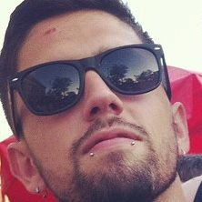
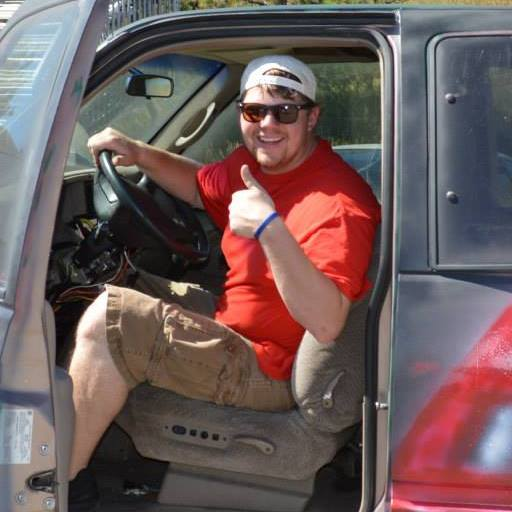
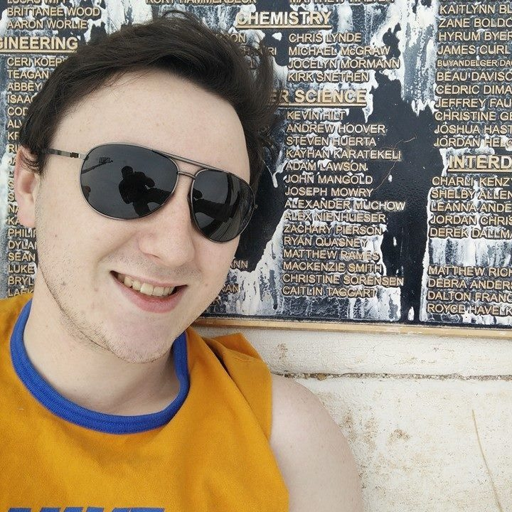
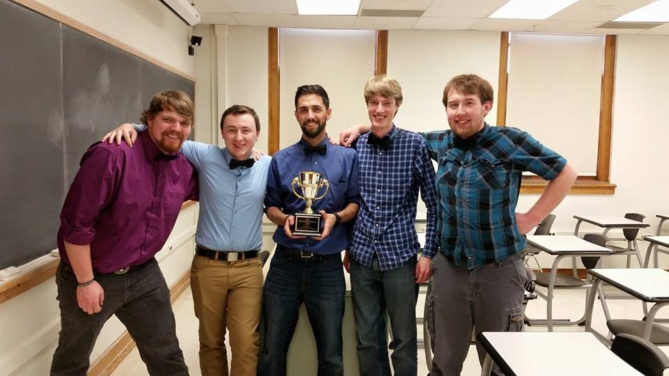

Crowd Control is a group management application. It is built around the database Parse, and the third-party messaging software Sinch.
The team consists of five members:
|  |  |  | ||
| Johnathan Ackerman | Daniel Andrus | Charles Bonn | Evan Hammer | Joe Mowry |
It all started when the team won the Butterfield Cup.

Over the summer, the team worked on getting the business aspects of Bowtaps. We were then confirmed that we could do CrowdControl as a senior design project.
During the first semester. The team worked on learning Java and making a plan on how to structure the code. At this time, the team worked side by side on iOS and Android. We build the app using the Model-View-Controller pattern. Towards the end of the semester, we had built a decent frame for both platforms, and users were able to create accounts and had minimal group functionality.
Now we are currently in the second semester. We have made significant progress on the functionality of the app. We have all the main components at least partially working: including group member locations and group messaging. Soon we will be looking for people who will be willing to alpha test with the team. We look forward to having a closed beta test right after the design fair, gather people from the design fair as testers. Anybody interested in testing CrowdControl can contact me at Johnny.Ackerman@Bowtaps.com.
Our business is doing pretty good as well. Of course we aren't currently making revenue because our product isn't released yet, but we have been in some competitions. We placed second in the Innovation Expo, and we have become finalists is the South Dakota Governor's Giant Vision contest.